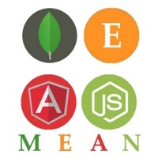

Raj Thakur
Java, Python, Javascript Developer
Learning - MEAN Stack Development
Bristlecone Pvt. Ltd. Pune
I'm an intrinsically motivated person with high passion towards Work. Having Knowledge of a wide variety of Programming Languages.
Interested in Programming and Software Development. Have developed various projects including web-based as well
as desktop applications. A Consistent Performer in academics. Securing distinction in all years of Engineering.
I’m a fresh Pass out graduate so you can expect a warehouse of energy and motivation available to me(A lot Still
left in stock ).
Technologies I Know
HTML
Hypertext Markup Language (HTML) is the standard markup language for creating web pages and
web applications. With Cascading Style Sheets (CSS) and JavaScript, it forms a triad of cornerstone technologies
for the World Wide Web
CSS
Cascading Style Sheets (CSS) is a style sheet language used for describing the presentation
of a document written in a markup language like HTML. CSS is a cornerstone technology of the World Wide
Web, alongside HTML and JavaScript
Javascript
JavaScript often abbreviated as JS, is a high-level, interpreted programming language. It is
a language which is also characterized as dynamic, weakly typed, prototype-based and multi-paradigm.
Alongside HTML and CSS, JavaScript is one of the three core technologies of the World Wide Web. JavaScript
enables interactive web pages and thus is an essential part of web applications.
Java
Java is a general-purpose computer-programming language that is concurrent, class-based, object-oriented,
and specifically designed to have as few implementation dependencies as possible. It is intended to let
application developers "write once, run anywhere" (WORA), meaning that compiled Java code can run on
all platforms that support Java without the need for recompilation.
Python
Python is an interpreted high-level programming language for general-purpose programming. Created
by Guido van Rossum and first released in 1991, Python has a design philosophy that emphasizes code readability,
notably using significant whitespace. It provides constructs that enable clear programming on both small
and large scales.
Learning-MEAN Stack

MEAN is a free and open-source JavaScript software stack for building dynamic web sites and web applications.The MEAN stack
is MongoDB, Express.js, AngularJS (or Angular), and Node.js. Because all components of the MEAN stack
support programs are written in JavaScript, MEAN applications can be written in one language for both
server-side and client-side execution environments.